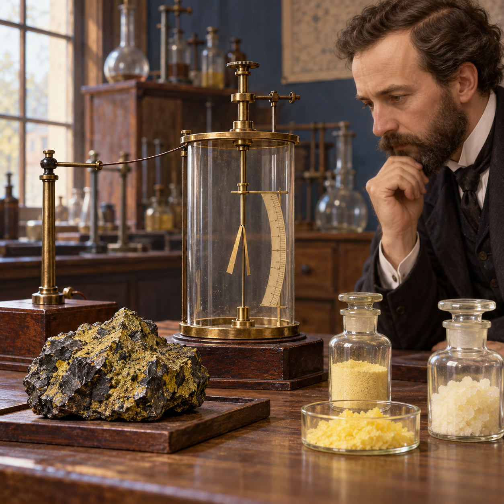
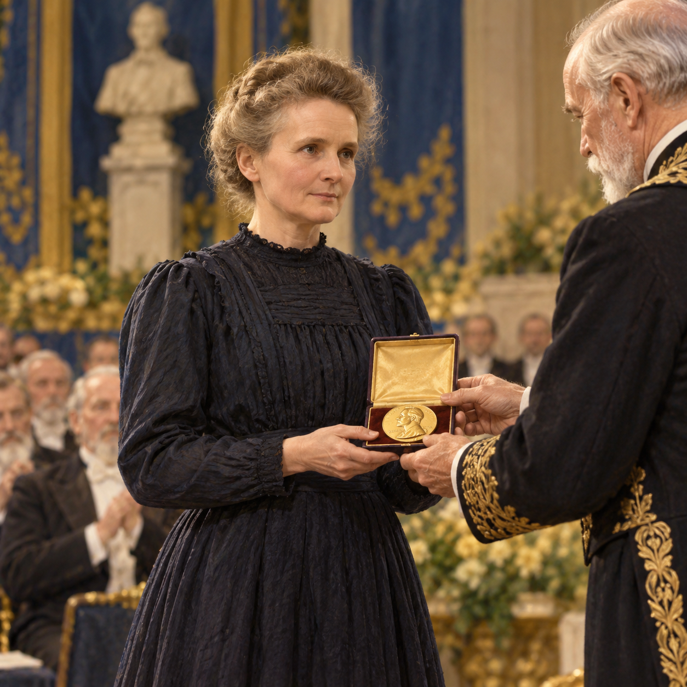

This asynchronous section uses interactive models to help you connect nuclear notation, conservation laws, radioactive decay, half-life, and radiation protection.
Move through the slides in order, interact with each model, and use the checkpoints to test your understanding before continuing.
Start with why nuclear chemistry matters before exploring the core skills.
By the end of this section, you should be able to:
Nuclear chemistry helps us understand processes that power stars, generate electricity, produce medical images and treatments, and affect the environment. In each case, the nucleus—not just the electrons around it—is changing or releasing energy.
This model is conceptual. The circles represent nuclei and the arrows represent a change in nuclear arrangement; they are not drawn to scale.
In 1896, Henri Becquerel discovered that uranium compounds emitted penetrating radiation spontaneously. Marie Skłodowska-Curie investigated this phenomenon, helped establish the term radioactivity, and showed that the effect came from atoms themselves.

1896 · Uranium radiation
1911 · Nobel Prize in ChemistryNuclear chemistry has important benefits, but using nuclear processes also creates responsibilities involving safety, waste, weapons, and environmental justice.
Hover over or tap a card to connect the science to a real-world question.
The Chernobyl disaster illustrates the consequences of reactor design, operational, and safety failures. The atomic bomb illustrates how nuclear reactions can be used as weapons with catastrophic human and ethical consequences. These examples are not arguments that nuclear chemistry is simply good or bad; they show why context, safeguards, and ethical decision-making matter.
An isotope is identified by its mass number, A, and atomic number, Z.
The total number of protons and neutrons in the nucleus.
The number of protons. It identifies the element.
Calculate by subtracting: neutrons = A − Z.
Choose an element and isotope. Then identify what each number means.
For 5525Mn, how many neutrons are present?
A nuclear equation must conserve both:
The sum of the superscripts must be the same on both sides.
The sum of the subscripts must be the same on both sides.
Think of A and Z as two separate bookkeeping systems. If one particle is missing, compare the totals to determine it.
Choose a transformation from the workbook examples. First predict the missing particle, then reveal the reasoning.
| Particle | Symbol | Change in A | Change in Z |
|---|---|---|---|
| Alpha | 42He | −4 | −2 |
| Beta-minus | 0−1e | 0 | +1 |
| Beta-plus | 0+1e | 0 | −1 |
| Gamma | 00γ | 0 | 0 |
In 147N + 42He → 178O + 11p, check the totals for A and Z.
Radioactive decay is a first-order process: the fraction that decays during each half-life is constant, but the absolute amount that decays becomes smaller as less material remains.
Move the slider to see how much remains after a number of half-lives.
| Elapsed half-lives | Percentage remaining | Fraction remaining |
|---|---|---|
| 0 | 100% | 1 |
| 1 | 50% | 1/2 |
| 2 | 25% | 1/4 |
| 3 | 12.5% | 1/8 |
| 4 | 6.25% | 1/16 |
| 5 | 3.125% | 1/32 |
Each half-life multiplies the remaining amount by 1/2. At five half-lives, 3.125% remains.
A useful radionuclide must remain active long enough to prepare, administer, and image, but it should not remain radioactive unnecessarily long.
It may decay before the image is obtained.
The patient may remain radioactive longer than needed.
Carbon-11 has a half-life of 20.4 min. If the process takes five half-lives, what percentage remains?
Technetium-99m has a half-life of 6.0 h. Ten hours pass between preparation and administration. Use the controls to estimate the fraction remaining.
Radiation differs in how far it travels through matter and how strongly it interacts with material. Select a radiation type to compare penetration and shielding.
People are exposed to ionizing radiation from natural background sources and, sometimes, from medical procedures. The values below are approximate comparisons; actual doses vary with location, altitude, equipment, procedure, and body size.
| Example | Approximate effective dose | What it illustrates |
|---|---|---|
| One banana | 0.1 µSv | Potassium-40 occurs naturally in food and in the human body. |
| One cross-country flight | 20–50 µSv | Cosmic radiation increases with altitude and flight duration. |
| One chest X-ray | About 0.1 mSv = 100 µSv | Medical imaging uses ionizing radiation for diagnosis. |
| Average U.S. annual exposure | About 6.2 mSv = 6200 µSv | A combination of natural background, medical, and consumer sources. |
| Quantity | SI unit | Common older unit | Meaning |
|---|---|---|---|
| Activity | Becquerel, Bq | Curie, Ci | How many nuclear decays occur each second. 1 Ci = 3.7 × 1010 Bq. |
| Absorbed dose | Gray, Gy | rad | Energy deposited per kilogram. 1 Gy = 100 rad. |
| Equivalent/effective dose | Sievert, Sv | rem | Dose adjusted to reflect radiation type and biological effect. 1 Sv = 100 rem. |
| Small effective dose | mSv or µSv | mrem | 1 mSv = 1000 µSv = 100 mrem. |
For exposure comparisons involving people, effective dose is commonly reported in sieverts. Activity in Bq or Ci describes a source’s decay rate, not automatically the dose received by a person.
Optional references: EPA radiation sources and doses · FDA radiation quantities and units · NRC measuring radiation
General pattern:
Which radiation would generally require the greatest external shielding?
Use the checklist to reflect on your readiness for the Section 4.6 activity.
When you are ready, continue to the assigned activity or submit the accompanying Canvas check for Section 4.6.